Qui a déclenché la « Guerre Froide » à la fin de la Seconde Guerre mondiale ?
par Yves LOIR et Daniel ROCHE
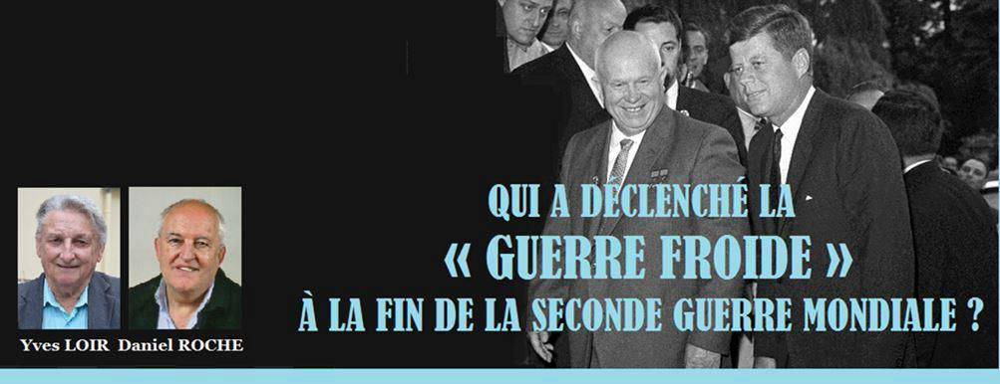
À propos de la tension existant depuis de nombreuses années et particulièrement en ce début d’année 2021, entre les États-Unis et la Fédération de Russie, concernant l'Ukraine notamment, certains observateurs ont employé le terme de « nouvelle guerre froide » pour caractériser celle-ci. Il importe de rappeler les conditions du déclenchement de la « première » guerre froide, après la fin de la seconde guerre mondiale ayant opposé pendant plusieurs décennies, l'Union Soviétique ou URSS aux États-Unis et exposant, pendant cette période, le monde entier aux risques d'un conflit nucléaire global. Il convient, tout d’abord, de décrire très brièvement quelques éléments du contexte géopolitique et militaire qui lui ont donné naissance et ensuite de tenter d'établir à qui revient la responsabilité principale de son déclenchement ....
Contexte géopolitique et militaire – 1918 -1945
1 / L'ENTRE DEUX GUERRES MONDIALES (1918 – 1939)
La première guerre mondiale (commencée en 1914) met aux prises les Alliés de l'Ouest (France, Grande Bretagne), l’Empire russe (jusqu’en 1918) puis les États-Unis (à la fin de la guerre - 1917) opposés aux Empires centraux (dont l’Allemagne) et la Turquie. Elle se termine par la capitulation de l'Allemagne le 11 novembre 1918. Peu avant cette date, une république parlementaire, la République de Weimar, avait remplacé l'Empire allemand (Reich).
Le Traité de Versailles, en 1919, clôt la 1ère Guerre mondiale. Ce traité a été considéré par un certain nombre d’analystes, comme injuste envers l'Allemagne car ce pays n'était pas le seul responsable du déclenchement du conflit et s'est vu infliger des clauses particulièrement lourdes parmi lesquelles le paiement de « réparations » (indemnités) très importantes aux principaux vainqueurs.
En 1920, Adolph Hitler, un agitateur nationaliste, après avoir adhéré au parti national-socialiste (nazi) créé peu avant, se fixe comme objectif la remise en cause des clauses du Traité de Versailles. Il accède au pouvoir en 1933 et institue une dictature dans ce pays. Au-delà de cette remise en cause, Hitler va mener une politique agressive et expansionniste en Europe au profit de l'Allemagne.
2 / LA SECONDE GUERRE MONDIALE
Elle débute le 1er septembre 1939 par l’invasion de la Pologne par Hitler (suite à la provocation nazie de Gleiwitz à la frontière germano-polonaise).
Quelle évolution géopolitique et militaire suivent les principaux belligérants pendant la période de la seconde guerre mondiale ?
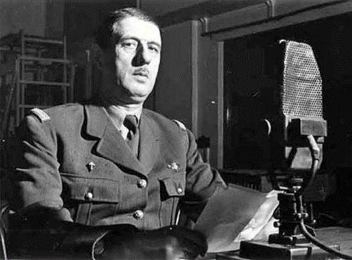France et Grande Bretagne
Le 3 septembre 1939, la France et la Grande Bretagne, consécutivement à l'invasion de la Pologne, déclarent la guerre à l'Allemagne. Après le rembarquement britannique de Dunkerque (mai 1940), la France, gouvernée par le Maréchal Pétain, signe un armistice avec l'Allemagne le 23 juin 1940 qui prévoit, entre autres, l'occupation partielle de la France.
Le gouvernement français (Pétain) s'établit à Vichy (zone non occupée) cependant qu'un général français, jusque-là inconnu, Charles De Gaulle, de Londres, appelle le 18 juin 1940, les Français à la résistance contre l'Allemagne et crée un pouvoir français libre militaire et civil qu'on va appeler « France Libre ».
Union Soviétique (U.R.S.S)
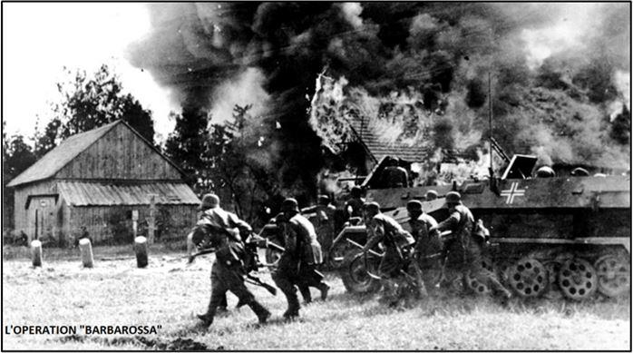L'Union soviétique est créée en 1922, après la révolution bolchévique (communiste) de 1917, sous le nom d’U.R.S.S (Union des Républiques Socialistes Soviétiques). Elle regroupe territorialement l'ancien Empire russe des Tsars.
Le 22 juin 1941, rompant un pacte de non-agression qui la liait à l’Union Soviétique, l’Allemagne attaque par surprise l'Union Soviétique (opération Barbarossa), envahit l’URSS et occupe la partie européenne de ce pays.
Après avoir obtenu des succès au cours des premiers mois de la guerre, l’Allemagne va être confrontée à une résistance croissante de l'armée soviétique L'armée allemande est ainsi stoppée devant Moscou (décembre 1941) puis à la fin de l’année suivante, est défaite à Stalingrad (sud du pays - décembre 1942- février 1943) et subit ensuite une succession de revers (Koursk - Bagration ...) jusqu'à la prise de Berlin par les Soviétiques (mai 1945).
États-Unis
Les États-Unis entrent en guerre contre le Japon le 7 décembre 1941 après l'attaque de Pearl Harbour (Iles Hawaï - Pacifique). Cet événement est suivi quelques jours plus tard de la déclaration de guerre de l'Allemagne aux États-Unis.
Le 6 juin 1944, les anglo-américains débarquent en Normandie. Il est à noter à ce propos que la réussite de ce débarquement n’a été permise que par le déclenchement décisif par les soviétiques à l’Est d’une opération concomitante de grande envergure (Opération « Bagration ») qui a couté 100 divisions aux allemands et a ainsi empêché tout transfert de troupes de l’Est vers la Normandie. À la suite de ce débarquement, les anglo-américains, rejoints en Alsace par l’Armée française, débarquée en Provence en août, ont poursuivi leur offensive en Allemagne où les Américains font leur jonction avec les Soviétiques en mai 1945 (Torgau).
Le 8/9 mai 1945, l’Allemagne signe la capitulation à Berlin, mettant fin à la guerre en Europe cependant que sur le théâtre militaire de l’Océan Pacifique, le Japon capitule, le 2 septembre 1945, mettant ainsi fin à la seconde guerre mondiale.
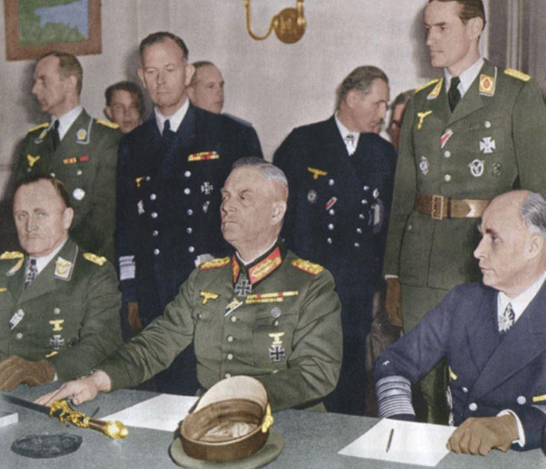
Prémices de la « guerre froide » : l’état d’esprit aux États-Unis pendant la seconde guerre mondiale
La guerre est marquée par l'émergence politique mondiale des deux principaux vainqueurs : à l'ouest, les États-Unis et à l'Est, l'Union soviétique cependant que l'Europe - vainqueurs et vaincus confondus - disparaît, pour une longue période, de la scène mondiale.
Les États-Unis, seuls parmi les autres belligérants, vont bénéficier d’avantages comparatifs indiscutables qui vont les tenir éloignés des aléas considérables qui pèsent sur ceux-ci :
1 L’invulnérabilité stratégique :
Du fait de leur situation géographique, les États-Unis sont préservés des « théâtres d’opérations » d’Europe et du Pacifique par deux océans infranchissables aux pays ennemis. Cette situation va faire qu’ils seront intacts à la fin de la guerre, n’ayant reçu aucune bombe ni aucun obus sur leur sol, évènement de nature à avoir un impact positif sur leur situation économique et humaine.
2 Une prospérité économique renforcée par le conflit :
Un graphique (exposé p.7 ci-dessous) représente l’évolution des P.I.B des principaux belligérants de 1938 à 1945. Ce graphique très éloquent indique que pendant que celui des États-Unis « explosait » littéralement durant cette période, celui des autres belligérants stagnait ou régressait. Ce document est significatif - même s’il ne rend pas compte complètement de l’état de multiples autres facteurs – de l’évolution de la situation économique générale des pays considérés.
3 Un transfert scientifique et technologique majeur de l’Europe vers les États-Unis :
Aux facteurs qui viennent d’être évoqués, va s’en ajouter un autre d’un poids qui jusqu’à maintenant n’a pas été suffisamment pris en compte, celui qui consiste à inventorier le transfert de connaissances en matière de sciences et de technologies d’Europe vers les États-Unis et ce, depuis le début du conflit jusqu’à sa conclusion et même au-delà. Avant même qu’ils n’entrent dans le conflit, les États-Unis affichent en effet un retard important dans ces domaines, aussi vont-ils être très « intéressés » par des « emprunts » multiples à l’acquis européen correspondant.
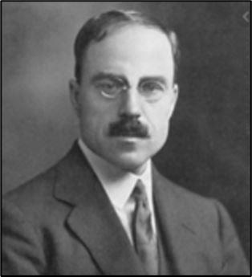La première manifestation de ce phénomène est l'envoi par les Britanniques au cours de l'été 1940, de la « Mission Tizard », du nom du scientifique britannique qui la dirigea, Sir Henry Tizard, lui-même spécialiste de la propulsion aéronautique à réaction. Cette mission va livrer aux États-Unis de nombreuses connaissances européennes majeures en matière scientifique et technologique (certains savants européens de haut niveau, allemands et français notamment étaient présents en Grande-Bretagne où ils s’étaient réfugiés au cours des mois ayant suivis le début du conflit). La « Mission Tizard » apportera aux États-Unis toute l’expérience et les avancées européennes décisives en matière de nucléaire - (les Britanniques avaient, avec d’autres européens, dès 1940 créé une commission ad hoc, la « Commission Maud » qui donnera naissance au projet américain « Manhattan ») - de détection électromagnétique (RADAR) et de propulsion aéronautique à réaction.
Grace à ce transfert technologique majeur, les États-Unis vont pouvoir mettre au point entre autres l'arme nucléaire qu'ils vont utiliser contre le Japon.
Il est à noter aussi qu’à la fin de la guerre, il y aura une « récupération » à grande échelle par les Américains des avancées allemandes en matière de propulsion à réaction et de missiles, domaine où les États-Unis accusent un grand retard.
Les États-Unis, conscients de disposer des avantages qui viennent d’être évoqués et conformément à leur tradition hégémonique, vont développer à cette époque, une « idéologie » exprimant la conscience de leur « supériorité » naturelle. Ce sentiment est diffusé par de nombreux médias à large audience évoquant Franklin Roosevelt comme « Président du Monde » ou l’inéluctabilité de la venue du « Siècle américain » etc… C’est dans ce contexte que naît une atmosphère d’hostilité à l’Union Soviétique. Les hauts dirigeants américains (ou ceux qui sont appelés à le devenir) vont exprimer d’une façon directe leurs sentiments ou leur vision du monde. On se contentera de citer à ce sujet quelques déclarations révélatrices de l'arrogance américaine illustrant l’état d'esprit de hauts responsables des États-Unis et notamment de deux d'entre eux, F. Roosevelt et H. Truman, qui ont occupé pendant 20 ans (1933- 1953) le poste de président des États-Unis - vis à vis de l'Union Soviétique, leur « alliée ».
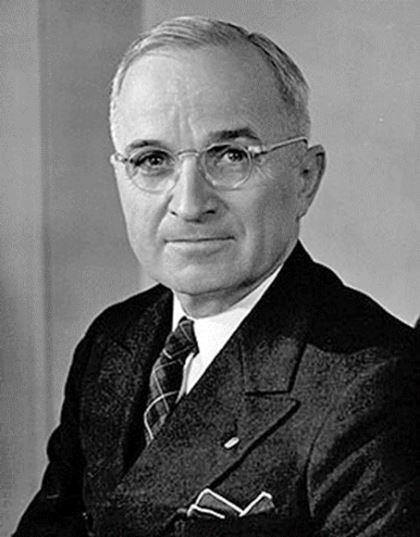Harry Truman, alors Sénateur du Missouri, qui deviendra Vice-Président en 1944 et Président des États-Unis en 1945 puis 1948 jusqu'en 1953 déclare le 23 juin 1941, (au lendemain de l'attaque hitlérienne de l'URSS « opération « Barbarossa ») :
« Laissons les Soviétiques et les Nazis s'entre-tuer le plus possible … »
Quant à F. Roosevelt, en campagne pour son 4è mandat en octobre 1944 à New-York, il affirme que :
« La force que nous avons acquise nous commande de prendre la direction de l'ensemble des nations ... ».
Il est à remarquer, par ailleurs, que l'état d'esprit qui vient d’être évoqué, loin d'être isolé aux États-Unis était partagé par de larges secteurs influents de ce pays …
Le propre fils du Président Roosevelt lui-même, Eliott Roosevelt, qui fut général d'aviation pendant la seconde guerre mondiale en Europe, bon connaisseur des milieux militaires, et avait une grande proximité avec son père, confirme dans un ouvrage paru en 1946 (sur la base d'échos recueillis aux États-Unis) l'existence d'une atmosphère d'hostilité guerrière à l'égard de l'Union Soviétique à la fin de la guerre.
De nombreux secteurs de l'opinion et des médias aux États-Unis vont partager cet état d’esprit pendant toute la durée de la Guerre.
Très imbus de leur « supériorité » (fut-elle due à la mainmise d’avancées scientifiques et technologiques majeures des pays européens) les États-Unis vont, de plus, bénéficier, pendant le conflit, d'une prospérité économique avérée qui, ajoutée aux autres « avantages » qui étaient les leurs, vont contribuer à leur faire adopter une attitude hostile à l'égard de leur « allié » soviétique qui a pourtant supporté, et de très loin, le poids principal de la guerre. Cette hostilité a pour base la rivalité systémique qui les oppose à ce pays. Par ailleurs, cet avantage teintera leurs sentiments d'un esprit de condescendance vis à vis des pays de l'Europe de l'Ouest, ruinés par la guerre.
Il pourrait être objecté, contre ce qui vient d’être évoqué qu’une aide « désintéressée » fut apportée par les « États-Unis » à l’Union soviétique pendant la Seconde Guerre mondiale sous la forme de la loi « Prêt-Bail » (envoi de matériel), qui s’adressait d’ailleurs à tous les alliés des États-Unis. Qu’il nous suffise de dire alors, concernant ce sujet, que ce qui a été avancé jusqu’à présent a été très largement inspiré par la position américaine et qu’un débat véritablement impartial ferait apparaître une vérité qu’il convient de rétablir.
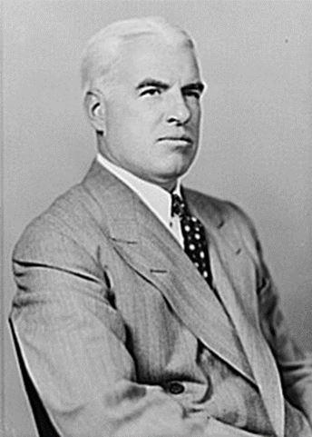Sans faire de commentaires superflus, nous conclurons sur ce sujet par le passage suivant extrait d'un ouvrage rédigé par le propre responsable du programme « Prêt-Bail » lui-même, Edward Stettinius, nommé à ce poste par Roosevelt : « Les Russes nous ont fourni une aide que l'on ne peut mesurer ni en dollars ni en tonnes. Elle peut se chiffrer en millions de soldats nazis tués ou captifs dans les camps russes de prisonniers, de chars nazis réduits à l’état de ferraille sur les champs de bataille, de canons et de camions nazis abandonnés par les armées allemandes en retraite. Les Russes ont payé cher leur victoire mais ils ont fait un mal irréparable à la machine de guerre nazie ». (« Le prêt-bail, arme de victoire » E. Stettinius – 1944 – p.266).
Une menace soviétique ?
Avant que la guerre ne soit terminée, une note du J.C.S (« Joint Chiefs of Staff » - organisme américain que nous décrivons p.9) du 4 février 1945 (Information memo 374 – 4 February 1945) nous informe des intentions de l'Union Soviétique pour l'après-guerre. Ce pays – nous indique la note – a l'intention de réduire massivement ses forces armées et de consacrer 1 million d'hommes aux tâches massives de sa reconstruction qui ne sera pas terminée avant 1952. Moscou redoute - selon cette note – un « encerclement » capitaliste et la formation d'alliances hostiles à ses frontières. Si l'Union Soviétique n’a pas l'intention de déclencher une guerre générale - y compris par une invasion de l'Europe de l'Ouest (de nombreuses notes du J.C.S en font foi) elle n'en redoute pas moins un « encerclement » à ses frontières. Cette menace d'encerclement perçue par l'Union Soviétique avait d'autant plus de fondement que l'ensemble des pays qui l'entouraient à l'époque lui étaient hostiles : la Chine, dirigée alors par le Maréchal Tchang Kai Chek, était très fortement sous influence américaine. Un des objectifs de l'Union Soviétique (selon les notes du J.C.S) était donc de constituer à proximité de ses frontières un « glacis » protecteur constitué de pays-tampon qui ont tous (à l'exception de la Pologne et de la Chine) participé, aux côtés de l’Allemagne, à l'invasion du 23 juin 1941. Ajoutons à ces pays ceux qui ont affiché des sympathies à l’égard de l'Allemagne hitlérienne tout en ne participant pas directement à la guerre, notamment l’Iran et la Turquie.
Penchons-nous maintenant sur l'état économique de l'Union Soviétique à la fin de la seconde guerre mondiale et posons-nous la question de savoir si ce pays était en état de déclencher un conflit majeur avec les États-Unis ou l'Ouest en général :
Dans un ouvrage, paru en 1998 (« The Economics of World War II »), l’historien britannique de l'économie, Mark Harrison, s'est livré à une étude comparative des économies de six pays belligérants de la Seconde Guerre Mondiale. Un certain nombre d'indications de nature à nous éclairer sur les grands traits de l’évolution économique des pays considérés, peuvent en être extraites.
Mark Harrison a intitulé le chapitre qu'il consacre dans son ouvrage à l'Union Soviétique « Le vainqueur défait » (« defeated victor »). Il voulait signifier par-là que, si l'Union Soviétique avait, pendant quatre ans, mené une guerre victorieuse contre l'Allemagne hitlérienne, cette victoire laissait ce pays en ruines, avec une économie « fortement dégradée ». Une situation qui allait avoir des conséquences néfastes pour le pays à court et à long terme, sans compter les pertes humaines qu'il avait subi (26,6 millions de morts civils et militaires selon l'estimation de M. Harrison) pertes qui auront – au-delà de leur aspect humain - une signification économique négative majeure et sont par ailleurs sans commune mesure - et de très loin - avec celles des autres vainqueurs.
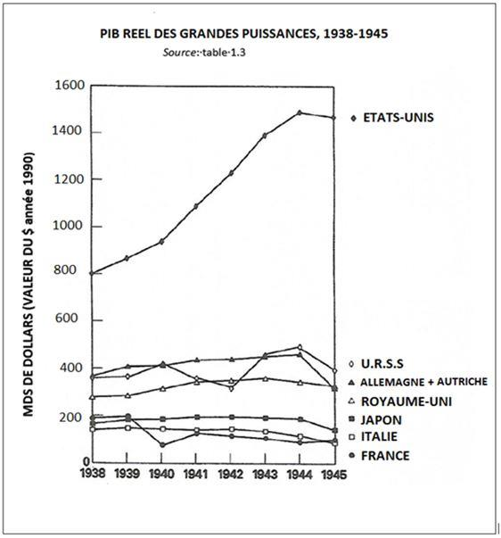D'une façon globale, le graphique ci-dessus (extrait de l'ouvrage de Mark Harrison) montre l'évolution du produit intérieur brut (richesse produite) dans les principaux pays belligérants de 1938 à 1945. Seul les États-Unis ont accru considérablement leur richesse. Bien entendu, ce graphique ne fait pas apparaître les nombreux facteurs humains ayant accompagné cette évolution, tels que le niveau de vie de la population, la qualité de la vie courante etc...
La note « 80/7 du 23 octobre 1945 » du J.I.S (Joint Intelligence Staff) citée par Steven Ross (p. 6 – « America, War Plans 1945-1950 ») met l’accent sur les raisons économiques pour lesquelles - selon le J.C.S - il n'y a pas de menace soviétique de guerre générale :
Selon cet historien militaire américain qui a lui-même enseigné dans une École militaire U.S, a été membre de la C.I.A et a dépouillé des milliers de documents d'archives du J.C.S à Washington : « Il faudra à l'URSS 15 ans pour restaurer ses pertes, tant humaines que matérielles, consécutives à la guerre. 10 ans pour moderniser son réseau ferré de transports civil et militaire, 5 à 10 ans pour produire des bombes atomiques et créer une force aérienne stratégique, et 15 à 20 ans pour construire une flotte de haute mer ».
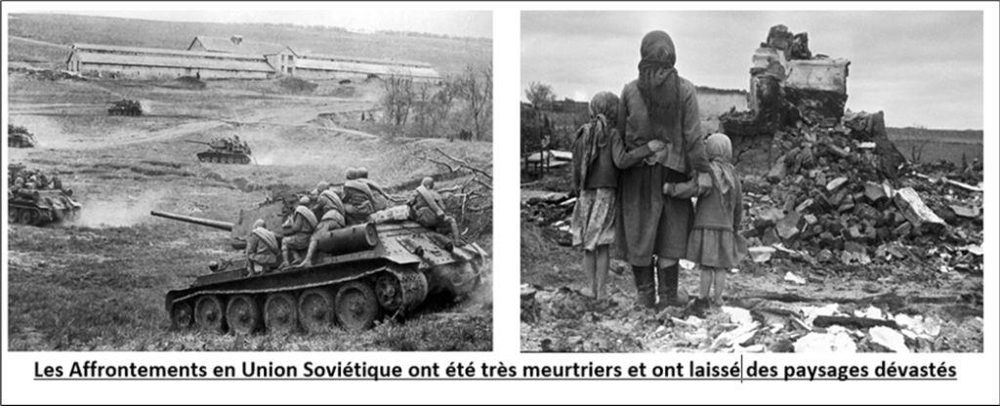La question centrale qui peut être posée à la suite de ces considérations économiques, est la suivante : « Est ce que l'Union Soviétique était en état et avait la volonté à la fin de la Seconde guerre mondiale, d'entamer une guerre de conquête vers l'Ouest ? » La réponse est non. C'est également ce constat des planificateurs américains du J.C.S qui a été porté à la connaissance des hautes autorités politiques américaines.
Face à ce constat, en quoi a donc consisté l'attitude de ces mêmes autorités, qu'elles soient civiles ou militaires, au cours de la même période ?
Les instances de conception et de planification militaire maintenues et créées aux États-Unis -1942 -1947-
Notons, en préalable, qu'après la fin de la Seconde Guerre Mondiale, les instances ou se conçoivent et se planifient les grandes opérations militaires aux États-Unis, non seulement ne vont pas disparaître avec la fin de la guerre, mais vont se maintenir. Il va même en être ajouté de nouvelles aux compétences élargies et renforcées …
La politique étrangère et de sécurité des États-Unis est conçue et mise en œuvre par le Président en exercice et par le Département d'État (ministère des Affaires étrangères ainsi que par le ministère de la Défense) mais différentes structures officielles ou non en sont parties prenantes sans compter ce qu'on appelle le « complexe militaro-industriel » ou certaines entreprises privées (par ex. « Rand Corporation »).
LE « JOINT CHIEFS OF STAFF » (J.C.S)
Le J.C.S a pour origine la nécessité pendant la seconde guerre mondiale pour les États-Unis et la Grande- Bretagne de disposer d'une structure restreinte commune de coordination militaire, à même d'évaluer et de concevoir sur le plan stratégique les axes de conduite de la guerre. Il tint sa 1ère réunion, peu après l’entrée en guerre des États-Unis, le 9 février 1942. Un des objectifs de la structure était de conseiller le Président des États-Unis sur le plan militaire général, des décisions majeures concernant notamment la stratégie et la logistique. Pendant la IIe G.M, cet organisme comprenait trois composantes principales : le « Joint Staff Planners » (J.S.P - planification des grandes opérations) le « Joint Intelligence Committee » (J.I.C - renseignements), le « Joint Logistics Committee » (J.L.C – problèmes de logistique). Après la fin de la seconde guerre mondiale, la structure J.C.S fut pérennisée. L'organisation maintiendra ses principales finalités, réservant cette fois ses travaux à la préparation d'une attaque contre l’Union Soviétique. Son organisation interne, tout en conservant certaines anciennes structures, fut remaniée en particulier par le « National Security Act ».
LE « NATIONAL SECURITY COUNCIL ».
Si le J.C.S, ainsi qu'il est souligné ci-dessus, constituait (et constitue de nos jours) une structure majeure dans la définition de la politique militaire des États-Unis, un autre organisme jouait (et joue actuellement) un rôle capital dans celle-ci : le « National Security Council » (N.S.C - Conseil de Sécurité Nationale). Créé le 26 juillet 1947 (loi n° 253) par H. Truman, qui y a vu un moyen de contrecarrer les pouvoirs du Congrès américain, le Conseil National de Sécurité à plusieurs finalités : réunir et coordonner au plus haut niveau politique et militaire l'action en matière de sécurité et de politique étrangère mais aussi conseiller le Président en exercice.
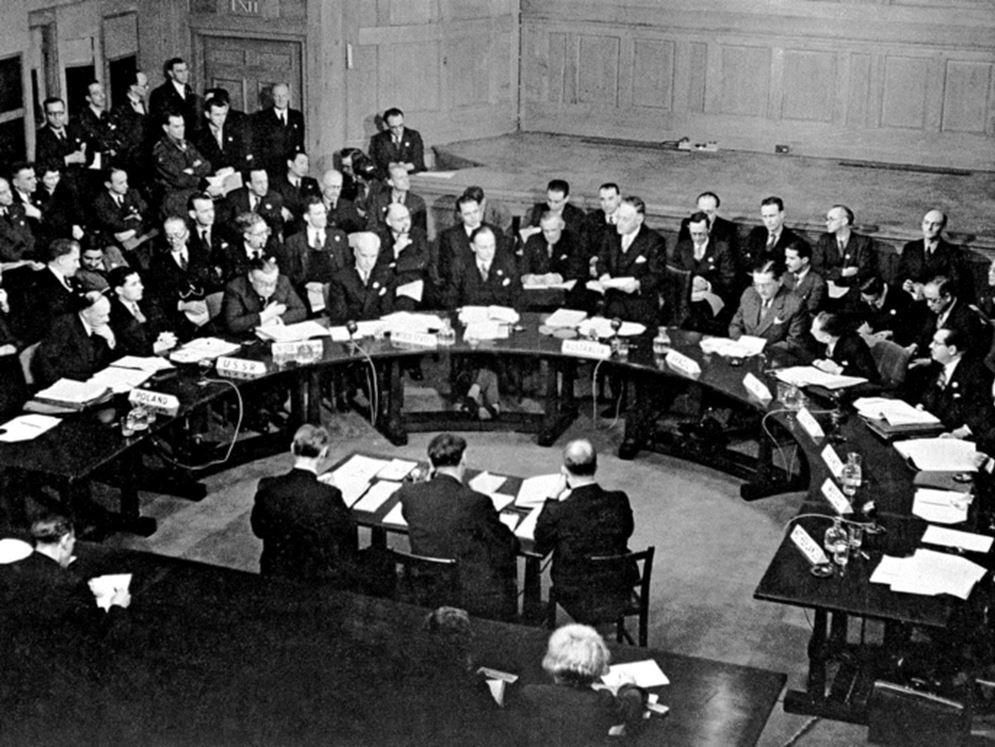
LE « COUNCIL OF FOREIGN RELATIONS »
À côté de ces deux structures officielles qui jouèrent un rôle majeur dans le déclenchement de la « guerre froide », après la fin de la seconde guerre mondiale, il existe aux États-Unis un organisme « privé », le « Council of Foreign Relations (C.F.R) qui joue un rôle très important en matière de réflexion et de conception concernant la politique étrangère. (Cette organisation fait paraître une publication intitulée « Foreign Affairs »). Cette structure, créée après la première guerre mondiale, se veut « bi-partisane » (démocrates - républicains) et est très influente aux États-Unis. Elle comprend de hauts représentants des affaires, des médias, du monde universitaire, et est fortement imbriquée avec le monde politique du moment.
Toutes les structures qui viennent d'être évoquées ont été, dans les années de l'immédiate après-seconde guerre mondiale, mises à contribution pour la définition et la mise en œuvre d'une confrontation militaire avec l’Union Soviétique et dans le déclenchement de ce qu'on a appelé la « guerre froide ». Mais bien sûr un protagoniste très important en était partie prenante et inspirateur : le Président des Etats-Unis qui était à l'époque Harry Truman :
HARRY TRUMAN
Né en 1884 à Lamar dans l'État du Missouri, H. Truman est membre du Parti démocrate après la première guerre mondiale. Il est élu Sénateur en 1934 Pendant la seconde guerre mondiale il est désigné comme candidat à la Vice-Présidence aux côtés de Franklin Roosevelt, à l'occasion de la campagne de celui-ci pour son 4ème mandat en 1944. Après l'élection de Roosevelt, il reste à ses côtés jusqu'à la mort de ce dernier le 12 avril 1945. Il lui succède à cette date comme président des États-Unis. Il sera élu Président en 1948 et restera au pouvoir jusqu'en 1953. Sa mandature sera inspirée par ce qu'on a appelé la « doctrine Truman » d'hostilité à l'Union Soviétique et marquée par la menace à son égard du déclenchement d'une « guerre préventive » nucléaire et d'utilisation de l'arme atomique pour atteindre les objectifs politiques et diplomatiques américains. (Par exemple, la menace de bombardement nucléaire contre les Soviétiques en Iran en mars 1946, pour défendre les intérêts économiques étatsuniens dans ce pays).
Préparation d'une attaque aérienne nucléaire U.S de l'union soviétique en 1945
Après avoir établi (voir ci-dessus) que pour différentes raisons, il n'y a pas, à la fin de la seconde guerre mondiale de menace soviétique non seulement contre le territoire américain pas plus qu' ailleurs, le « Joint Intelligence Committee », par une note du 3 novembre 1945 (J.I.C 329) sur la « Vulnérabilité de l'URSS à une attaque aérienne limitée » n'en recommande pas moins la destruction par bombardement nucléaire des cités soviétiques nominativement désignées suivantes : Moscou, Gorki (aujourd'hui Nijni-Novgorod), Kouybichev, Sverdlosk, Novossibirsk, Omsk, Saratov, Kazan, Leningrad (aujourd'hui Saint-Pétersbourg), Bakou, Tachkent, Tcheliabinsk, Nijni-Tagill, Magnitogorsk, Molotov (aujourd'hui Perm), Tbilissi, Stalinsk (aujourd'hui Novokouznetsk), Grozny, Irkousk, Jaroslav.
Il peut être allégué que les plans élaborés par le « Joint Chiefs of Staffs » n'étaient que des plans et n'engageaient pas l'autorité politique suprême des États-Unis, c'est à dire le Président de l'époque, Truman, qui n'a pas ordonné leur mise à exécution. Plusieurs considérations peuvent être mises en avant à ce sujet :
1/ Les préoccupations humanitaires n'étaient pas de nature à influencer Truman, l'exemple japonais (destruction nucléaire d'Hiroshima et de Nagasaki et mort consécutive de plusieurs dizaines de milliers de civils) est là pour le montrer
2 / Si l'anéantissement par bombardement nucléaire de 20 cités soviétiques tel qu'il était programmé) n'a pas eu lieu, ce n'est pas dû à une préoccupation « humanitaire » de Truman mais à des considérations techniques : tout d'abord le nombre de bombes atomiques disponibles aux États-Unis à l'époque se limitait à deux unités, fin 1945, la seconde contrainte était, elle aussi, d'ordre technique : le rayon d'action des avions devant transporter les bombes sur les 20 cités soviétiques était insuffisant. Par ailleurs d'autres considérations techniques empêchèrent la mise à exécution des projets de bombardement nucléaire « préventif » ou de « première frappe » américaine ainsi que le révèlent les documents du « J.C.S » notamment, telles que le manque d'avions d'escorte des bombardiers ou l'insuffisance de données disponibles sur les « cibles » soviétiques.
Ces contraintes techniques seront levées au cours des années suivantes mais l'Union Soviétique disposera alors, de l'arme atomique (1949) et au début des années 1950, de vecteurs pour la transporter (missiles) ce qui sera de nature à établir avec les USA un équilibre stratégique qui n'existait pas dans l'immédiate après-guerre et était de nature à dissuader les États-Unis à engager l’action qui vient d’être évoquée.
Il est donc établi qu'à la fin de la seconde guerre mondiale, les dirigeants des États-Unis de l’époque et les hauts responsables militaires de ce pays, mettant à profit le monopole de fabrication des armes atomiques - qu'ils détenaient à ce moment - élaborèrent des plans utilisant cette arme. Or - de leur propre aveu - aucune menace militaire n'émanait de l'Union Soviétique et ne visait tant le territoire américain que celui de l'Europe de l'Ouest.
Il est à noter que les projets de bombardement nucléaire de l’Union Soviétique élaborés en 1945, furent suivis au cours des années suivantes de plans s'inscrivant dans une même logique nucléaire guerrière (« Pincher », « Bushwacker » …).
Quelques étapes historiques de l'hégémonisme américain
Si aucune menace militaire n'émanait à cette époque de l'Union Soviétique - et tel était le cas suivant les documents officiels militaires américains - Quelle pouvait être la motivation des États-Unis ? Le rappel d'une très courte rétrospective historique peut nous « éclairer » à ce sujet :
Si, dès l'origine au XVIIIe siècle, il est possible de déceler les prémices de ce qui deviendra l'hégémonisme américain, il faudra attendre les XIXe, XXe et XXIe siècles pour observer le développement de celui-ci :
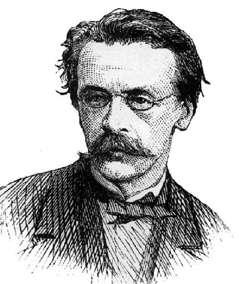Une première étape est théorisée par la publication d’un document intitulé « La Destinée manifeste » en 1845 et dont l'auteur est John O' Sullivan. Ce journaliste new yorkais a employé ces termes pour « justifier » l'expansion territoriale des États-Unis naissants, limités alors partiellement à la partie orientale du continent nord-américain, vers l'ouest et vers le sud. Il a préconisé notamment l'annexion du Texas au détriment du Mexique et l'annexion dans les années qui ont suivi d'un grand nombre de territoires appartenant à ce même pays et qui deviendront des états américains (Arizona - Nevada - Californie - Nouveau Mexique …) consécutivement à la guerre, déclarée par les États-Unis au Mexique en 1846. « La Destinée manifeste » eut un très large écho aux États-Unis.
Vers les années 1890, l’Amiral A.T. Mahan (1840 - 1914) qui fut en quelque sorte le théoricien de l'impérialisme nord-américain, préconisait une expansion mondiale des États-Unis sous les prétextes les plus divers. Les principes énoncés par Mahan à la fin du XIXè siècle furent suivis de la guerre hispano-américaine, à l'occasion de laquelle l'Espagne fut dépouillée des derniers vestiges de son empire en Amérique centrale et dans le Pacifique ou l'archipel des Philippines fut arraché aux indépendantistes philippins, à l'issue d'une longue guerre ponctuée d’atrocités. Il faut noter aussi que l'Amiral Mahan fut un inspirateur majeur - de leur propre aveu - de deux présidents américains, Théodore Roosevelt (1858- 1919) et Franklin Roosevelt (1882-1945) qui étaient par ailleurs cousins. Les thèses de Mahan furent largement connues et diffusées aux États-Unis.
Il apparaît ainsi que, pour ne prendre que ces deux exemples parmi de nombreux autres, l'hégémonisme américain plonge ses lointaines racines dans l'histoire même des États-Unis.
Position de la France
Si, à l’époque, quelques milieux en France relayent complaisamment certaines thèses bellicistes ayant cours Outre-Atlantique, plusieurs personnalités françaises - et non des moindres - ainsi qu'une partie importante du peuple français montrent que les uns et les autres ne se font guère d'illusions sur la réalité des véritables intentions américaines, fussent-t-elles dissimulées soigneusement par des campagnes d’opinion et de propagande appropriées.
En témoigne le Général de Gaulle, qui, après avoir exercé la fonction de Président du Gouvernement Provisoire de la République Française de 1944 au début 1946, publiera ses « Mémoires de guerre » dans le courant des années cinquante. Dans ceux-ci, il relate sa rencontre avec les présidents américains à Washington, Franklin Roosevelt tout d’abord, au début juillet 1944 et Harry Truman, l'année suivante. Au cours de son entretien avec Roosevelt, le Général de Gaulle perçoit - ainsi qu'il le souligne - la « volonté de puissance » du président américain même si, comme il l'indique, cette volonté de puissance est « habillée d'idéalisme ». Le président américain, lui, développe ses « conceptions inquiétantes pour l'Europe et pour la France » (…) sur lesquelles il entend « instituer un système permanent d'intervention » sous le couvert de l’O.N.U que les États-Unis, à cette époque, contrôlent totalement (p.237- 238 de ses mémoires). Pendant toute la durée de la seconde guerre mondiale, le Chef de la France libre dut faire face à l'hostilité de Roosevelt qui voyait en lui un obstacle à sa volonté de mise en place de l’ « ordre américain » de l'après-guerre, excluant entre autres, la France qui avait supporté, seule, le poids de l 'agression hitlérienne en 1940 et qui, malgré le sursaut de la « France Libre » se trouvait très affaiblie par la défaite initiale du début du conflit.
En août 1945, De Gaulle rencontre Harry Truman avec lequel il a également de longs entretiens. Pas plus qu'avec Roosevelt, le dirigeant français n'est convaincu du bienfondé de certaines des « recettes » du président américain concernant le monde nouveau issu de la guerre. Notant que « parmi les belligérants, les États-Unis étaient les seuls intacts », De Gaulle comprend d'après les propos de Truman, que les États-Unis entendent s'assurer la direction du monde de l'après-guerre.
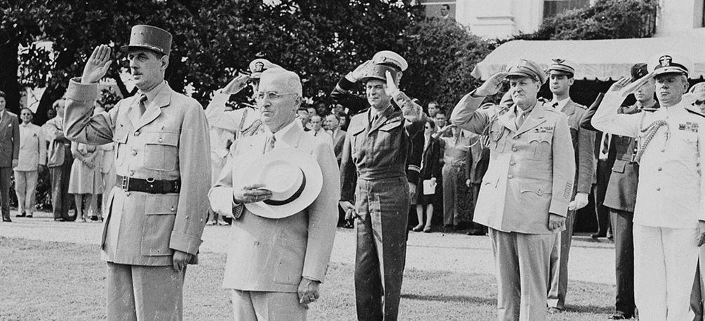Il est à noter que seule, parmi les pays de l’Ouest, la France du Général de Gaulle envoya une unité militaire, le régiment aérien « Normandie - Niémen » combattre sur le front de l'Est aux côtés des Soviétiques.
À signaler aussi, qu'en Décembre 1944, De Gaulle, président du Gouvernement provisoire de la République française, se déplaça à Moscou pour y signer avec Staline un pacte d'assistance mutuelle franco-soviétique.
D'autres indices - relevés dans les rapports militaires américains - soulignent la position de retrait de la France concernant les projets aventuristes américains. Ainsi une étude du « J.W.P.C » (Joint War Plans Committee, composante du J.C.S) du 15 mai 1947 (J.W.P.C 474/1) citée par Steven Ross, établit que dans le cas d'un conflit, avec l'Union Soviétique, la France resterait neutre ou glisserait dans une situation de guerre civile compromettant ainsi les projets des planificateurs militaires américains partisans d'une « guerre préventive » contre l'Union Soviétique.
Qui a déclenché la « guerre froide » ?
Le terme de « guerre froide » a été employé pour la première fois en septembre 1945 par l'écrivain - philosophe britannique, Georges Orwell, environ un mois après l'emploi de bombes atomiques pour anéantir les villes japonaises de « Hiroshima » et de « Nagasaki ».
Selon le Prix Nobel de physique (1947) britannique James Blackett, les premières victimes de la guerre froide seront les victimes japonaises des bombardements atomiques américains de « Hiroshima » et de « Nagasaki » au début août 1945. Il fallait en effet, pour les Américains, prendre de court en août 1945 les Soviétiques qui après une offensive terrestre foudroyante en Mandchourie conformément à leurs engagements antérieurs, se préparaient à débarquer au Japon par le détroit de Corée et dans l'île japonaise d’Hokkaido par l’île Sakhaline et les îles Kouriles. La décision de bombardement atomique du Japon fut prise par le Président américain H. Truman et les arguments qu'il a avancés pour « justifier » sa décision ne résistent pas à un examen impartial des faits.
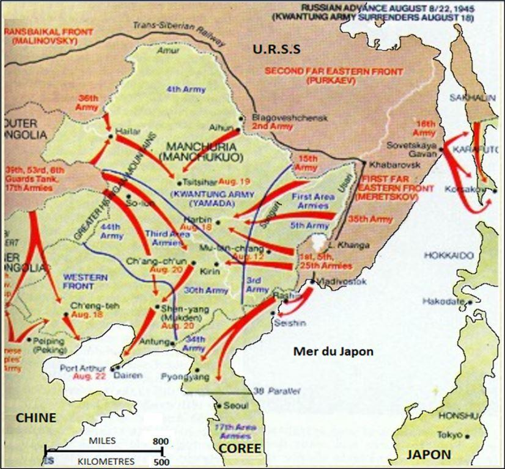
Offensive soviétique en Mandchourie contre le Japon (Aout 1945)
L'objectif de cette brève note – affirmions nous à son début – est de déterminer à qui appartient la responsabilité du déclenchement de la « guerre froide» ?
A la lumière de la consultation de nombreux documents d'origine américaine pour l'essentiel, qu'ils soient officiels ou non et dont l'authenticité ne peut être contestée, il apparaît que :
1/ Il n'existait pas, après la fin de la seconde guerre mondiale, de menace soviétique de guerre générale, notamment d'invasion de l'Europe occidentale.
2/ Les États -Unis, qui disposaient à cette époque, pour quelques années, du monopole de fabrication de l'arme atomique, ont préparé dès 1945 – via leurs instances militaires officielles spécialisées (J.C.S), une attaque nucléaire par surprise, dite de « première frappe » ou « préventive », destinée à l'anéantissement de vingt cités soviétiques, sans provocation soviétique préalable.
3/ A l'époque des faits, les États-Unis, pour concrétiser le projet qui vient d'être évoqué, étaient confrontés à des contraintes techniques empêchant la mise en œuvre de celui-ci : ils ne disposaient pas notamment d’un nombre suffisant de bombes atomiques, ni de vecteurs (bombardiers B29) à rayon d'action suffisant, ni d'avions-chasseurs de protection de ces bombardiers.
4/ Le plus haut dirigeant politique nord-américain de l'époque, le Président Harry Truman - qui prit la décision, basée sur des évaluations mensongères, de bombarder et d'anéantir les deux villes japonaises de Hiroshima et de Nagasaki - mit à profit ce monopole, pour la poursuite d'objectifs politiques et diplomatiques américains « classiques », comme la menace, émise en mars 1946 par H. Truman de bombardement nucléaire imminent des positions soviétiques dans le nord de l'Iran, afin de protéger leurs propres intérêts économiques (accès aux ressources pétrolières iraniennes) et ceux de leur allié britannique en Iran , ces trois pays occupant d'un commun accord l'Iran pendant la seconde guerre mondiale.
Il apparaît donc, à la lumière de l'observation rigoureuse des faits historiques concernant la période de l'immédiate après - seconde guerre mondiale, que la responsabilité du déclenchement de ce qu'on a appelé la « guerre froide » et qui a opposé pendant plusieurs décennies les États-Unis à ce qu'on appelait alors l’Union Soviétique (U.R.S.S) appartient essentiellement aux États-Unis. La motivation de leur action, à cette époque, était leur volonté hégémonique mondiale.
Quand on connait un tant soit peu l’histoire de ce pays, cette volonté est récurrente depuis l'origine et s'est manifestée particulièrement au cours des XIXe, XXè et XXIè siècles.
Cette volonté hégémonique des États-Unis se pare, selon les époques, de « justificatifs » idéologiques et « humanistes » divers. Au XIXè siècle, il s'agissait d'apporter la civilisation aux peuplades indiennes « sauvages » qu’il convenait de chasser de leur territoire ou d’exterminer, d'en finir avec le colonialisme espagnol, y compris en massacrant plusieurs centaines de milliers d’indépendantistes philippins. Au XXème siècle, il s'agissait de rassembler le « Monde libre », sous direction américaine pour combattre le communisme et de promouvoir un « Siècle américain » (selon le très influent Henry Luce, membre éminent du puissant « Council of Foreign Relations »). En ce début de XXIe siècle, il s’agit, sous le couvert d'un soi-disant « exceptionnalisme » américain de mener des croisades contre les régimes « autocratiques » et « illibéraux » - en « oubliant » le soutien apporté dans le passé et actuellement par les États-Unis aux régimes dictatoriaux les plus sanguinaires et les plus corrompus.
Que l'on doive parer pour autant l'Union Soviétique et ses principaux dirigeants au cours du XX è siècle, et notamment de Joseph Staline, qui dirigea ce pays de 1923 à 1953, de vertus exemplaires, il ne saurait, bien sûr, en être question. On ne saurait dire non plus que certains principes qui dictaient alors la politique extérieure de l'Union Soviétique, étaient marqués d'un pur angélisme (l’étaient-ils à l'Ouest ?). Certains comportements peuvent s'expliquer en partie par les épreuves inouïes de la guerre subie par ce pays pendant quatre années et des souffrances endurées…
Néanmoins, le respect de la vérité historique dans sa globalité, nous oblige, tout d’abord, à la rechercher, la reconnaître et ensuite d'en restituer objectivement les grands traits …
Y.L. D.R.
SOURCES PRINCIPALES
La relation de l'histoire s'appuie largement sur le recours à des sources, qu'elles soient archivistiques ou bibliographiques. Pour la période qui est l'objet de cette note de synthèse, un certain nombre d'ouvrages ont été publiés aux États-Unis notamment, après la déclassification en 1985 de certaines archives militaires américaines sensibles. Parmi ces publications - dont la plupart ne sont pas traduites en français à notre connaissance - les informations dont nous disposons en sont extraites notamment de deux ouvrages s'appuyant sur des sources officielles militaires américaines longtemps classées « top-secret » et détenues actuellement au N.A.R.A (National Archiv and Records Administration) de Washington. Ces deux ouvrages – parmi d'autres- figurent en tête de la liste suivante :
Steven T. Ross – American War Plans 1945 – 1950 - Ed. Frank Cass London - Portland (USA) - 1996 (1ère ed. 1988)
Micchio Kaku - Daniel Axelrod – To win a Nuclear War – The Pentagon Secret War Plans – South End Press -Boston MA – 1987
Concernant ces deux ouvrages, les faits relatés sont largement documentés sur le plan archivistique - (Archives du J.C.S - Joint Chiefs of Staff). Par ailleurs, une abondante bibliographie appuie les faits avancés par Steven Ross qui fit partie pendant de longues années de l'« establishment » militaire américain.- Il fut notamment et entre autres analyste à la C.I.A
Eliott Roosevelt - Mon père m'a dit – Flammarion – 1946 -
Charles de Gaulle - Mémoires de guerre – Plon – 1956 – Tome II - L'Unité -
- Mémoires de guerre – Plon – 1959 – Tome III - Le Salut -
Harley A. Notter - Post World War II Foreign Policy Planning – Congressional Information Service – 1987 -
Mark Harrison - The Economics of World War II – Cambridge University Press – 1998 -
Claude Jullien - L'Empire américain – Ed. Bernard Grasset – 1968 -
Helene Carrère d’Encausse – Le Général de Gaulle et la Russie – Fayard – 2017.
Partager cette page